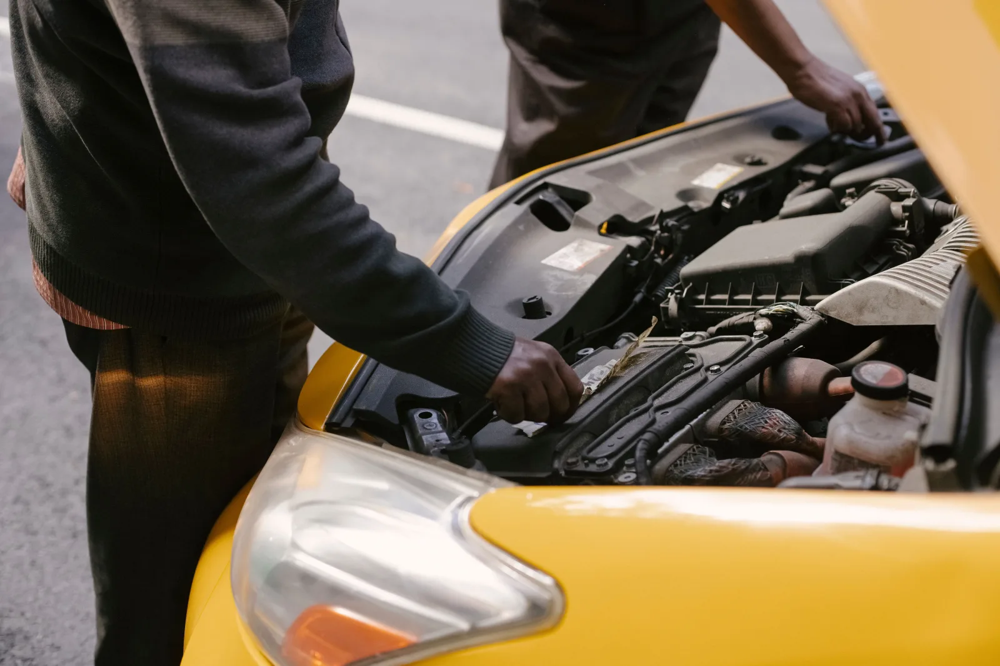

Models that learn how your specific equipment degrades, not a generic anomaly detector.
Built by team members who developed predictive maintenance platforms at previous companies across aircraft engines, manufacturing and wind.
Tens of thousands of rotating, electrical and hydraulic assets monitored by the team at previous companies, before founding Anteam.
Aerospace, energy, renewable energy and manufacturing, in roles the team held before founding Anteam.
Most predictive maintenance tools are built to work across any customer's equipment out of the box, which means the model is trained on a generic pattern of what failure looks like, not on how your specific machines actually degrade. That generality is exactly what limits how early and how reliably it can catch a real problem before it becomes a costly one.
Anteam's team has over a decade of experience building AI-driven predictive maintenance platforms at previous companies, across aircraft engines, manufacturing equipment and wind turbines, catching degradation patterns before they turned into unplanned downtime. We apply that same experience to your operation: a model trained on your own sensor readings and maintenance history, learning the specific failure patterns of your equipment rather than approximating an industry average. This is the same bespoke-over-generic approach behind every model Anteam builds.
Not sure predictive maintenance is the right fit? Talk to us first →
Condition monitoring reports the current state of an asset, a rising vibration level, a temperature trend. Predictive maintenance takes that signal further: it estimates when a component will fail and what it costs if you wait, which is the answer a planner can actually act on. Analytics-driven maintenance strategies can cut unplanned downtime by up to 50% industry-wide (McKinsey & Company), but only when the model is specific enough to be trusted with that decision.
Models trained on your own SCADA, PLC, vibration, temperature, current and voltage signatures, oil analysis and CMMS maintenance history usually carry enough signal to start. A new sensor only gets added where a specific failure mode genuinely can't be seen in what you already record, not before.
Predictive maintenance is only as good as its coverage of real failure modes. These are the mechanical, electrical and hydraulic failures the team's models have been applied to at previous companies, across tens of thousands of assets.
We audit what your historians, PLCs, sensors and CMMS already hold, and identify which failure modes are visible today.
Degradation models are trained on your historical data and tested against known past failures before anything goes live.
A defined asset group runs in shadow mode so predictions can be checked against reality before anyone changes a work order.
Proven models extend across the fleet and connect into your planning and work-order systems.
Anteam's team has over a decade of experience building AI-driven predictive maintenance platforms across aircraft engines, manufacturing equipment and wind turbines, from previous roles prior to founding Anteam. We apply that experience to build predictive maintenance models trained on your own operational data.
Models are trained on your own sensor and maintenance history, not a generic anomaly detector, so predictions reflect how your specific equipment actually degrades rather than an industry average.
The team's prior experience spans aircraft engines, manufacturing equipment and wind turbines. The approach generalises to any equipment producing regular sensor or maintenance log data.
Historical sensor readings and maintenance logs for the equipment in question. The more history available, the earlier the model can learn to catch degradation patterns before they become failures.
Less than most operators expect. Existing SCADA, PLC, CMMS and telemetry data usually carries enough signal to build a first model. Additional sensors are added only where a specific failure mode can't be detected from what's already recorded.
Yes. Fewer unplanned stoppages mean more available running hours, and shorter, better-prepared interventions mean less time in the workshop. Both raise utilisation on the fleet you already own, usually a cheaper route to capacity than buying more.
Reach out to schedule a quick 15-minute chat to discuss your pain points. We'll talk about how Anteam AI can help.